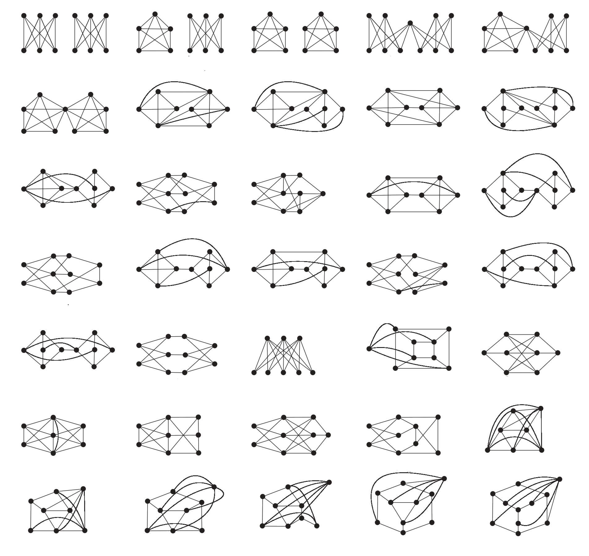

Graphs on DonutsAn invitation to topological graph theory
Some graphs refuse to be drawn in the plane. Drawn on other surfaces instead, Euler’s formula fails in a strangely consistent way — and the number it produces belongs not to the graph, but to the surface it is drawn on.
Every mathematics student meets Euler’s formula at least once. Draw a finite connected graph in the plane so that edges meet only at common vertices — call such a drawing a planar sketch1 — and count the vertices, the edges, and the regions. Then
\[|V|-|E|+|F|=2.\]The proof is a pleasant induction on the number of regions. If there is only one region, the graph has no cycle, so being connected it is a tree, \(|E|=|V|-1\), and the formula checks out. If there are at least two regions, some edge separates a bounded region from the unbounded one; such an edge is not a cut-edge, so erasing it keeps the graph connected while lowering both \(|E|\) and \(|F|\) by one — and the induction closes.
Notice what the formula quietly asserts: the number of regions does not depend on which planar sketch we chose — it is an invariant of the graph itself. Try it yourself below: however you draw a connected graph, the count refuses to budge.
The formula also has teeth. A short argument with it shows that a planar sketch of a graph on at least \(3\) vertices always satisfies \(|E|\le 3|V|-6\), and \(|E|\le 2|V|-4\) if the graph has no triangles. And these innocent bounds are enough to convict: the complete graph \(K_5\), the complete bipartite graph \(K_{3,3}\), and the Petersen graph admit no planar sketch at all.
The story could end here, with a small family of graphs banished from the plane. Instead, look at the following figures.
All three can be drawn on a torus — a donut — without a single crossing. Had our criterion for “planarity” been the torus rather than the plane, all three would have qualified. And now something curious. Count the regions each drawing carves out of the torus. The drawing of \(K_{3,3}\) determines \(3\) regions, and \(6-9+3=0\). The drawing of \(K_5\) determines \(5\), and \(5-10+5=0\). The Petersen graph: \(5\) regions, and \(10-15+5=0\).
You can run the count with your own eyes. A torus is what you get by taking a square sheet and gluing its opposite edges — walk off the right edge and you re-enter from the left; walk off the top and you re-enter from the bottom. Below, \(K_5\), \(K_{3,3}\) — and the Petersen graph too — are drawn on exactly such a square. Hover over any region and watch its scattered-looking pieces light up together: on the torus, they are one region.
Euler’s constant \(2\) has been replaced, three times in a row, by a \(0\). Is this \(0\) a property of the three graphs, or of the surface they are drawn on? The graphs have little in common; the torus is what they share. So the suspect is the surface. But then what exactly did the plane do to deserve its \(2\)?
A new life for an old formula
Our question is old, and mathematics did not leave it lying around. Euler’s alternating sum turned out to be too good an idea to stay confined to drawings in the plane: algebraic topology took it further, and attaches to every surface \(M\) a number \(\chi(M)\), named the Euler characteristic in his honour. This number is a genuine invariant of the surface — two surfaces that can be continuously deformed into one another2 have the same \(\chi\) — and its first two values are
\[\chi(\text{sphere})=2,\qquad \chi(\text{torus})=0.\]Precisely the constants our drawings kept producing.
But wait — our graphs were drawn in the plane, not on a sphere. This objection dissolves on contact: a crossing-free drawing in the plane can be rolled up onto a sphere, and a crossing-free drawing on a sphere can be flattened out into the plane, by stereographic projection through a point of some region. Planarity and “sphericity” are the same property, and the plane’s \(2\) was the sphere’s \(2\) all along.
So what is this \(\chi(M)\)? Here the story comes full circle, because it is defined by doing exactly what we have been doing: drawing a graph. Take any finite graph sketched on \(M\) without crossings, subject to one crucial condition — every region the drawing carves out of \(M\) must be deformable into a disk. Call such a drawing a cellular sketch3. Then one defines
\[\chi(M)=|V|-|E|+|F|,\]and a foundational theorem guarantees the answer does not depend on which cellular sketch you used. The figure below shows a cellular sketch on the sphere — two vertices, two edges along the equator. Pause on it for a moment: why is each of the two regions a disk? Counting gives \(2-2+2=2=\chi(S^2)\), and a similar picture on the torus gives \(\chi(T^2)=0\).
Read that definition against our mystery and the whole plot turns inside out. We thought we were computing something about graphs, and the surface interfered; topologists compute something about surfaces, and the graph is scaffolding. In particular, if our graph happens to admit a cellular sketch on a surface \(M\), then its counts are not free to be anything — they are computing \(\chi(M)\):
\[|V|-|E|+|F|=\chi(M).\]This is the generalized Euler formula, and Euler’s original is exactly the case \(M=S^2\), once we notice that on the sphere every crossing-free sketch of a connected graph is automatically cellular. (Why is that?) It also explains, and vastly extends, the invariance we noticed at the very start: on a fixed surface, all cellular sketches of a graph determine the same number of regions, namely \(\chi(M)-|V|+|E|\).
The one word carrying all the weight is cellular, and it is not decoration. Watch what a single triangle can do on the torus:
The blue drawing carves the torus into \(2\) regions, both disks: cellular, and indeed \(3-3+2\) is not \(2\) but \(0=\chi(T^2)\), as promised. The red drawing carves out only \(1\) region — a region that wraps around the hole of the torus and is no disk at all. Non-cellular drawings simply refuse to compute \(\chi\), and the region count of a sketch, in general, depends on the sketch.
So our formula holds whenever we can produce cellular sketches, and two urgent questions appear. Given a graph, how do we ever obtain a cellular sketch of it on some surface? And on which surfaces — could the answer fail to be unique in some troublesome way? The rest of this article answers both. First, though, we should meet the surfaces.
The cast of surfaces
A beautiful classification theorem of topology says that the closed4 surfaces with two sides are completely known: every one of them can be deformed into a sphere with exactly \(g\) handles — equivalently, \(g\) holes punched through it — called the \(g\)-torus and written \(M_g\). The number \(g\) is the genus of the surface, \(\gamma(M)\).
“With two sides”? Is that a genuine hypothesis — does a surface not obviously have two sides, the way a wall has? It is genuine, and here is the monster that makes it necessary: take a strip of paper, give it a half-twist, and glue the ends. The result is the Möbius band, and it has one side. Don’t take our word for it — carry the vector once around the band yourself, and see what state it returns in.
The Möbius band itself is not closed — it has a boundary circle — but closed one-sided surfaces do exist (one of them, the Klein bottle, will pay us a visit at the end of this article), so the classification honestly needs its hypothesis. Surfaces with two sides are called orientable, and from here on our surfaces are connected, closed, and orientable: the surfaces \(M_g\).
For these, genus and Euler characteristic are the same information in two disguises:
\[\chi(M_g)=2-2g.\]The sphere’s \(2\) and the torus’ \(0\) are the cases \(g=0\) and \(g=1\), and each new handle costs two units of characteristic. So our two questions become concrete: we are looking for cellular sketches of a given graph on the surfaces \(M_g\), and we want to know how the story depends on \(g\).
Capping, or how to repair a drawing
We attack the first question — producing cellular sketches — with a strategy that sounds too lazy to work: take any crossing-free drawing on any surface (we will see below that one always exists), and repair it. The repair is called the capping operation[1], and the idea fits in one breath: cut the surface open along the drawn graph, find a piece that is not a disk, throw a suitable part of it away, and seal the wounds with disks.
Slightly more carefully: suppose \(\rho:G\to M\) is a non-cellular drawing. Cutting \(M\) along the image of \(G\) leaves connected pieces; let \(S\) be one that is not a disk, and let \(\overline S\) be \(S\) together with its boundary. If \(M\setminus\overline S\) is a surface, remove \(S\) and glue a disk — a cap — along each boundary circle. The offending region has become a disk, and the graph never noticed.
There is a real “if” in that sentence: \(M\setminus\overline S\) can fail to be a surface. (Look back at the red triangle in Figure 8 and try to see the obstruction with your own eyes.) The way around it is a lemma from topology whose formal statement we skip, because its entire content is visible in the pictures below: inside any such region \(S\) one can find a subsurface \(T\), bounded by finitely many disjoint circles, such that what remains of \(S\) outside \(T\) consists of hollow cylinders — each cylinder joining one of \(T\)’s boundary circles to the graph. Removing \(T\) instead of all of \(S\), and capping \(T\)’s boundary circles, is always legal, and forces the whole region \(S\) to become a disk.
Rather than proving that capping does what we claim, let us watch it work — the pictures are the argument. Take the planar graph shown below, drawn without crossings on the double torus. Since the graph is planar, capping ought to carry this drawing all the way down to the sphere. It will, one handle at a time. We begin by cutting the surface along the edges of the drawing; each resulting piece is a connected component.
Separating the pieces, we get the components shown below — cutting curves dashed, the inner side of the surface shaded darker. Choose the region \(S\) as indicated and, inside it, the subsurface \(T\) promised by the lemma. Its boundary consists of two circles, and \(S\setminus T\) is a single piece, plainly a hollow cylinder: one end attached to a cutting circle, the other to an edge of the drawn graph. Following the recipe, we remove only \(T\) from the double torus, obtaining the figure on the right.
The surface left behind has two boundary circles, and each must bound a disk. (Why? Can you find an argument that works in general?) So two caps may be glued in — the cap being attached is shown in blue — sealing the holes that removing \(T\) tore open. On the right, the graph sits on the new, repaired surface, otherwise undisturbed.
With a little squinting, the repaired surface is an ordinary torus: capping has lowered the genus by one. So we simply run the procedure again — cut along the edges, separate the pieces — and pick a component that is not a disk; we take the region \(S'\) shown for the next round. (And a question worth stopping for: among the separated pieces below, is the large one that wraps around the remaining hole a disk or not? Argue it.)
The lemma again hands us a subsurface \(T'\), bounded by circles, whose complement in \(S'\) is made of hollow cylinders. Removing \(T'\) produces the middle figure, and as before every boundary circle of what remains bounds a disk, so each can be capped; the attachment of one cap is shown.
The left figure below caps the remaining hole; the middle one shows the graph on the resulting surface — still the original drawing, untouched through all of this. And now look at that surface: it is nothing but the sphere. (Do you see why? Convince yourself before reading on.) Capping has delivered a crossing-free sketch of our planar graph on the sphere, exactly as predicted; there it is on the right.
This is the general pattern. Each round either finds a non-disk region and lowers the genus, or finds none — and a drawing with no non-disk regions is precisely a cellular sketch. The procedure must therefore terminate, and it terminates in a cellular sketch. (One reassurance we will quietly rely on: capping an orientable surface always yields an orientable surface, so we never wander out of our cast of characters.)
The genus of a graph
Capping repairs a drawing, but it needs one to start from. So we owe ourselves the existence statement: every finite connected graph can be drawn, crossing-free, on some closed orientable surface. The construction is charmingly brutal — one handle per edge. First, an equivalent picture of \(M_n\) that suits it: instead of punching \(n\) holes through a sphere, attach \(n\) hollow cylinders to its outside, as below; the result, the \(n\)-handle sphere, can be deformed into \(M_n\).
Now place the vertices of \(G\) anywhere on the sphere. For each edge \(\overline{uv}\), take two small disks around \(u\) and \(v\) and attach the two ends of a private hollow cylinder \(H_{\overline{uv}}\) to them. On the resulting surface — which is \(M_{|E|}\) — route each edge through its own handle. No two edges ever meet outside the vertices, so \(G\) embeds in \(M_{|E|}\).
The set of \(g\) for which \(G\) embeds in \(M_g\) is therefore nonempty, and its smallest element deserves a name: the genus of the graph \(G\), written \(\gamma(G)\). And with it, both of our questions can be answered — though the second answer holds a small surprise.
First, fix a surface \(M\) on which \(G\) can be drawn. One can show that an arbitrary crossing-free drawing always satisfies \(|V|-|E|+|F|\ge\chi(M)\), with equality exactly for the cellular ones: on a given surface, the cellular sketches are precisely the drawings with the maximum possible number of regions, and that maximum is \(\chi(M)-|V|+|E|\). (Our triangle on the torus illustrates the inequality: the red drawing gives \(3-3+1=1>0\).)
Second, uniqueness — and here is the surprise. The surface carrying a cellular sketch of \(G\) is not unique: a graph may sit cellularly on surfaces of several different genera. Even \(K_4\), a planar graph, admits a cellular sketch on the torus — a pleasant exercise: find one, and check that the formula forces it to have exactly \(2\) regions. What is canonical is not the surface but the smallest one, \(M_{\gamma(G)}\). And the minimal surface turns out to be exactly as well-behaved as one could dream: a well-known theorem[6] says that every crossing-free drawing of a connected graph on its minimal surface is automatically cellular — on \(M_{\gamma(G)}\), there is nothing to repair.
Putting the pieces together: every finite connected graph \(G\) satisfies, on its minimal surface, an honest unconditional Euler relation
\[|V|-|E|+|F|=2-2\gamma(G),\]which is the goal we set ourselves at the start. Euler’s formula is the sentence “\(\gamma(G)=0\)”, spoken about planar graphs.
And just as in the plane, the formula immediately yields bounds. If \(G\) contains no cycle shorter than \(k\), then on every closed orientable surface \(M\) carrying a drawing of \(G\) one gets \(k|V|+2k\gamma(M)\ge 2k+(k-2)|E|\). One concrete dividend: \(K_{5,5}\) cannot be drawn on the torus, since it has \(10\) vertices, \(25\) edges, no cycle shorter than \(4\), and \(4\cdot 10+8<8+2\cdot 25\).
What is it good for?
So every graph carries a hidden integer, its genus. Two stories, told briefly, show the kind of work this invariant does.
The first story runs our question in reverse. We asked: given a graph, which surfaces accept it? Turn it around: given a surface \(M\), which graphs embed in it? For the sphere there is a classical and beautiful answer, a theorem of Kazimierz Kuratowski[3]: a graph is planar if and only if it contains no subdivision of \(K_5\) or of \(K_{3,3}\)5. Our two original exiles are thus not merely examples — they are the only obstructions to planarity. A theorem of Wagner[4] says the same with “minor” in place of “subdivision”.
Could every surface have such a finite list of forbidden configurations? Astonishingly, yes — and not because anyone found the lists. One of the deepest results in all of graph theory, due to Robertson and Seymour[5], says that any family of graphs closed under taking minors is characterized by a finite set of forbidden minors; since the graphs embeddable in a fixed surface form such a family, the finite list exists for every surface. There is a strange epilogue: given the list for a surface \(M\), one could test embeddability in \(M\) in polynomial time — but no one knows a general method for computing the list, and beyond the sphere the lists are known only in a very few cases.

The second story connects the genus to colouring, and it is one of the great sagas of the subject. Define the chromatic number of a surface \(M\) as the largest number of colours that some graph drawn on \(M\) genuinely needs for a proper colouring of its vertices. In 1890 Heawood guessed a formula for it and proved half of his guess; the other half — that some graph on \(M_g\) really requires that many colours — resisted for seventy-eight years, until Ringel and Youngs[7] settled it: for every orientable surface with \(\gamma(M)\ge 1\),
\[\chi_C(M)=\left\lfloor\frac{7+\sqrt{1+48\,\gamma(M)}}{2}\right\rfloor.\]Trading the genus for the Euler characteristic, the same formula in the form \(\chi_C(M)=\big\lfloor\frac{7+\sqrt{49-24\chi(M)}}{2}\big\rfloor\) turns out to hold for the one-sided closed surfaces as well — with a single, delicious exception: the Klein bottle, the one-sided cousin of the torus we promised earlier. Its characteristic is \(0\), the formula predicts \(7\), and yet Franklin[8] had already shown in 1934 that six colours always suffice there — and he exhibited a map on the Klein bottle actually needing all \(6\).
And notice the case the theorem carefully excludes: the sphere. Fed \(\gamma=0\), the formula outputs \(4\) — but proving that four colours suffice on the sphere is precisely the four-colour theorem, which fell only to the computer-assisted proof of Appel and Haken[9]. It is one of the pleasant ironies of the subject that every exotic surface was settled first, and the “easiest” one, the surface we live on, was hardest of all.
(One last property, for the record, because it is too clean not to mention: for disconnected graphs the genus simply adds up — a theorem of Battle, Harary, Kodama, and Youngs[10] says \(\gamma(G)=\sum_i\gamma(G_i)\) over the connected components.)
A parting game
We close with a family of problems that are genuinely fun, and they need one last idea. An orientable surface orients things: choose a field of outward normal vectors — the Möbius band was the surface that refused to give us one — and each normal vector induces a counterclockwise sense of rotation around its point. This, in turn, hands every region of a cellular sketch a preferred direction of travel along its boundary: a “counterclockwise” tour of its own frontier. Before playing, prove the key structural fact: every edge is traversed exactly twice in total — by two different regions, or twice by the same region — and the two traversals run in opposite directions. (Switch on “directions” below and the fact stares back at you.)
Now, the game. Fix a cellular embedding \(\rho:G\to M\) of a finite connected graph on a connected, closed, orientable surface, and on the boundary of each region — each a disk — place one car. Each car drives continuously counterclockwise around its own region, at whatever speed it likes, accelerating and braking at will. Below, the sphere: a wheel graph, six regions (the outside is a region too — remember, we are on a sphere), six cars.
The questions below escalate gently: the first was posed at a mathematical olympiad, the last is an honest theorem of Klyachko, and the middle ones mark the path from one to the other. Everything developed in this article — the generalized Euler formula above all — is fair equipment, and any single one of these problems repays the whole journey.
- (St. Petersburg 1993) Suppose \(M\) is the unit sphere in \(\mathbb{R}^3\) and every car moves with speed at least \(1\ \mathrm{mm/h}\). The motion is otherwise completely arbitrary: not necessarily periodic, not of constant speed. Prove that a collision must occur in finite time.
- Weaken the assumption: instead of a positive lower bound on the speed, suppose only that each car completes every lap of its boundary in finite time (so cars may now stop). Prove that collisions must occur at at least two distinct points of the sphere in finite time[2]. Is the number of collision points a geometric property of the embedding?
- Find an example of cars moving on a torus so that no collision ever occurs.
- Now let several cars share each region: \(d_F\) cars drive along the boundary of the region \(F\), where \(d_F\in\mathbb{N}\), and the boundary of \(F\) is partitioned into \(d_F\) arcs so that at every moment each arc carries at most one car. Stopping is still allowed. Prove that if \(M\) is the sphere, at least \(2+\sum_F(d_F-1)\) collisions occur, the sum ranging over all regions.
- If \(M\) is the torus and at least one region contains more than one car, a collision must occur.
- (Klyachko) On an arbitrary such surface \(M\), collisions occur at at least \(\chi(M)+\sum_F(d_F-1)\) distinct points.
The statements gathered in this article are given without their proofs, to keep the walk unencumbered. Any reader who would like to see a proof of them is warmly invited to write to the author at aryanhemmati1382@gmail.com.
References
- Roberts, J. H., & Steenrod, N. E. (1938). Monotone transformations of two-dimensional manifolds. Annals of Mathematics, 39(4), 851–862. jstor.org/stable/1968468
- Klyachko, A. A. (1993). A funny property of sphere and equations over groups. Communications in Algebra, 21(7), 2555–2575. doi.org/10.1080/00927879308824692
- Kuratowski, K. (1930). Sur le problème des courbes gauches en topologie. Fundamenta Mathematicae, 15, 271–283. (Reprinted in Graph Theory, Springer, 1983.)
- Wagner, K. (1937). Über eine Eigenschaft der ebenen Komplexe. Mathematische Annalen, 114, 570–590. eudml.org/doc/159935
- Robertson, N., & Seymour, P. D. (2004). Graph minors. XX. Wagner’s conjecture. Journal of Combinatorial Theory, Series B, 92(2), 325–357. doi.org/10.1016/j.jctb.2004.08.001
- Youngs, J. W. T. (1963). Minimal imbeddings and the genus of a graph. Journal of Mathematics and Mechanics, 12(2), 303–315.
- Ringel, G., & Youngs, J. W. T. (1968). Solution of the Heawood map-coloring problem. Proceedings of the National Academy of Sciences, 60(2), 438–445. doi.org/10.1073/pnas.60.2.438
- Franklin, P. (1934). A six color problem. Journal of Mathematics and Physics, 13, 363–369. doi.org/10.1002/sapm1934131363
- Appel, K., & Haken, W. (1977). Every planar map is four colorable. Part I: Discharging. Illinois Journal of Mathematics, 21(3), 429–490. doi.org/10.1215/ijm/1256049011
- Battle, J., Harary, F., Kodama, Y., & Youngs, J. W. T. (1962). Additivity of the genus of a graph. Bulletin of the American Mathematical Society, 68, 565–568. doi.org/10.1090/S0002-9904-1962-10847-7